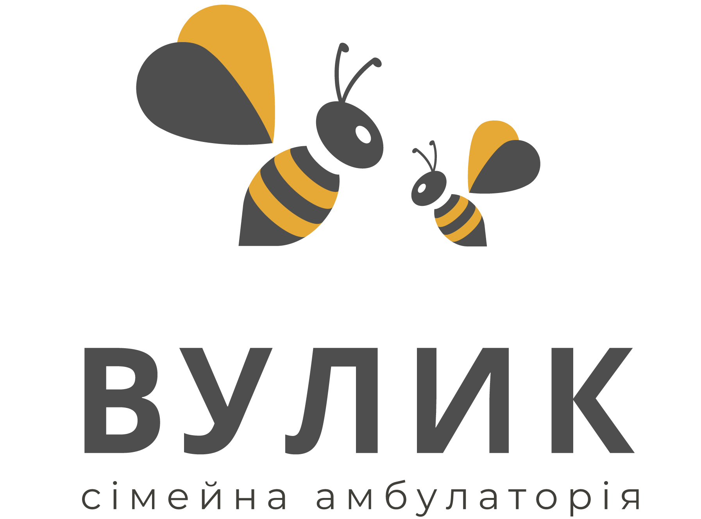

Вузькі спеціалісти
Дзвінка
Копанська
Інформація про спеціаліста буде додана найближчим часом.

Інформація про спеціаліста буде додана найближчим часом.
Про спеціаліста
Інформація про Дзвінка Копанська буде додана найближчим часом.
Оберіть зручний час — ми підберемо найближчий прийом
Записатися на прийом